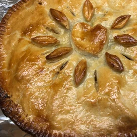

Apple Pie

The Secret to Making Bakery-Quality Apple Pie
Here's the biggest secret for great apple pie: Toss your apples
with the rest of the filling (including spices, flour, butter,
and both light and brown sugars), and let it sit overnight. The
sugar will draw out the liquid from the apples, which is key for
a moist, not soggy, filling. But don't discard the juices; they're
liquid gold. Reduce them in a sauce pot, then once it's thick and
syrupy, add it back to the apples. You'll be rewarded for your hard
work with a more concentrated, deep and rich flavor.
Also don't reach for any old apples; you want a balance of flavors with
a crisp bite. Granny Smiths will give you the best combination of
juicy and tart. Don't forget to peel them before coring and
chopping—those skins are too tough and fibrous for pie.
Emrbace the upper crust. A deep golden-brown crust really seals the
deal on a hot apple pie—it's what makes it a true show-stopping number.
Don't rely on your oven's heat alone to get that burnished color. Brush
the crust generously with egg wash before baking; the egg will help it
brown without over-baking.
Ingredients
- 1/2 cup butter
- 1 cup brown sugar
- 5 Granny Smith apples--peeled, cored quartered, and thinly sliced
- 3 (9 inch) refrigerated prerolled pie crusts
- 1 cup white sugar, divided
- 2 teaspoons ground cinnamon, divided
- 1/4 cup white sugar
- 1 tablespoon butter, cut into small chunks
Steps
-
Preheat oven to 350 degrees F (175 degrees C).
-
Place 1/2 cup butter into a heavy cast iron skillet, and
melt butter in the oven. Remove skillet and sprinkle with
brown sugar; return to oven to heat while you prepare the
apples.
-
Remove skillet, and place 1 refrigerated pie crust on top
of the brown sugar. Top the pie crust with half the sliced
apples. Sprinkle apples with 1/2 cup of sugar and 1 teaspoon
of cinnamon; place a second pie crust over the apples; top
the second crust with the remaining apples, and sprinkle with
1/2 cup sugar and 1 teaspoon cinnamon. Top with the third crust;
sprinkle the top crust with 1/4 cup sugar, and dot with 1
tablespoon of butter. Cut 4 slits into the top crust for steam.
-
Bake in the preheated oven until the apples are tender and the
crust is golden brown, about 45 minutes. Serve warm.